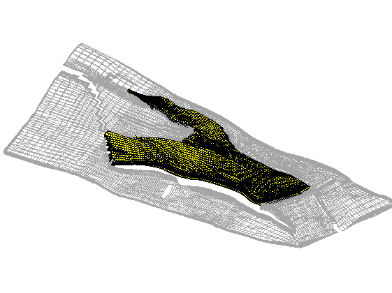

Grids: Example of a Real Field Model
In this example we will show several examples how to manipulate and plot corner-point data. As an example, we will use a real-field model that has faults, inactive cells, and disconnected components
Contents
Inspect the whole model
We start by reading the model from a file in the Eclipse formate (GRDECL)
grdecl = readGRDECL('GSmodel.grdecl') %#ok (intentional display)
grdecl =
TSTEP: []
PSIDE: [0x0 struct]
FLUXSIDE: [0x0 struct]
NOGRAV: 0
METRIC: 1
WATER: 1
OIL: 1
GAS: 0
wells: [1x0 struct]
cartDims: [46 112 22]
COORD: [31866x1 double]
ZCORN: [906752x1 double]
ACTNUM: [113344x1 double]
From the output of readGRDECL, we see that the file contains four fields:
- The dimension of the underlying logical Cartesian grid (keyword SPECGRID, equal 46x112x22)
- The coordinates of the pillars (keyword COORD, 6x47x113 values)
- The coordinates along the pillars (keyword ZCORN, 8x46x112x22 values)
- The flag for active/inactive cells (keyword ACTNUM, 46x112x22 values)
Since the keyword ACTNUM is present, the model is likely to contain both active and inactive cells. To be able to plot both the active and the inactive cells, we need to override the ACTNUM field when processing the input, because if not, the inactive cells will be ignored when the unstructured grid is built.
actnum = grdecl.ACTNUM; grdecl.ACTNUM = ones(prod(grdecl.cartDims),1); G = processGRDECL(grdecl);
Adding 10304 artifical cells at top/bottom Processing regular i-connections Found 102259 new regular faces Elapsed time is 0.203925 seconds. Processing i-faults Found 666 faulted stacks Found 33587 new faces Elapsed time is 5.246698 seconds. Processing regular j-connections Found 111075 new regular faces Elapsed time is 0.132320 seconds. Processing j-faults Found 220 faulted stacks Found 10705 new faces Elapsed time is 0.920855 seconds. Processing k-connections Found 130730 new regular faces Elapsed time is 0.164198 seconds. Building grid struct removing 10304 artifical cells at top/bottom removing 8374 inactive and pinched cells
To simplify the processing, we add a single layer of artifical cells above the top and below the bottom of the model, but not touching the model. (This is what is reported in the first line of the output). In the following, we therefore work with a 46x112x24 model.
In the first phase, we process all faces with normals in the logical i-direction. There should be 47x112x24=126336, out of which 102259 are not degenerate or at a fault. In the next phase, we process the faults and split faces to obtain a matching grid. Here there are faults at 666 pairs of pillars and the splitting of these results in 33587 new faces. If each face were split in two, we would have obtained 666x(22x2+2)=30636, which means that some of the faces have been split into at least three subfaces. The process is then repeated in the logical j-direction.
The processing assumes that there are no faults in the logical k-direction and therefore processes only regular connections. In absence of inactive or pinched cells, there should be (22+5)x112x46=139104 faces. The processing detects only 130730, which is 8374 less than expected. However, we see that this number corresponds to the number of inactive and pinched cells that are next removed from the model.
The result of the grid processing is a new structure G, outlined below
G %#ok (intentional display)
G =
nodes: [1x1 struct]
faces: [1x1 struct]
cells: [1x1 struct]
faceEdges: [1387303x1 uint32]
cellFaces: [659767x2 int32]
cartDims: [46 112 22]
Having obtained the grid in the correct unstructured format we plot the outline of the whole model with the 'FaceColor' property set to 'none' for the inactive cells and to 'y' for the active cells.
newplot; subplot('position',[0.025 0.025 0.95 0.95]); hi = plotGrid(G,find(~actnum(G.cells.indexMap)), ... 'FaceColor','none','EdgeColor',[0.65 0.65 0.65]); ha = plotGrid(G,find( actnum(G.cells.indexMap)),'FaceColor','y'); axis equal off; view(-95,40); zoom(1.4);
Inspect the active model
To inspect only the active model, we reset the ACTNUM field to its original values and recreate the grid. Now, inactive cells will be ignored and we therefore get a different unstructured grid.
grdecl.ACTNUM = actnum; clear actnum;
G = processGRDECL(grdecl);
Adding 10304 artifical cells at top/bottom Processing regular i-connections Found 44925 new regular faces Elapsed time is 0.103295 seconds. Processing i-faults Found 666 faulted stacks Found 23265 new faces Elapsed time is 3.003289 seconds. Processing regular j-connections Found 52594 new regular faces Elapsed time is 0.105126 seconds. Processing j-faults Found 220 faulted stacks Found 6013 new faces Elapsed time is 0.414333 seconds. Processing k-connections Found 70061 new regular faces Elapsed time is 0.137200 seconds. Building grid struct removing 10304 artifical cells at top/bottom removing 68417 inactive and pinched cells Warning: Grid has 2 disconnected components
Here we see that the grid has two disconnected components. Let us investigate this. We start by examining the G-structure.
for i=1:numel(G), disp(['G(',int2str(i),'):']); disp(G(i)); end
G(1):
nodes: [1x1 struct]
faces: [1x1 struct]
cells: [1x1 struct]
faceEdges: [621086x1 uint32]
cellFaces: [291238x2 int32]
cartDims: [46 112 22]
G(2):
nodes: [1x1 struct]
faces: [1x1 struct]
cells: [1x1 struct]
faceEdges: [244x1 uint32]
cellFaces: [72x2 int32]
cartDims: [46 112 22]
The first element is clearly the largest part of the grid and hence we start by inspecting this part
newplot; subplot('position',[0.025 0.025 0.95 0.95]); h1 = plotGrid(G(1)); view(95,70); axis tight off;

Then we plot the second part of the grid in a different color and rotate the view to confirm that the two parts really are disconnected
h2 = plotGrid(G(2),'FaceColor','r'); view(180,0);

Partition the grid
From now on, we disregard the 12 disconnected cells.
G = G(1); blockIx = partitionUI(G,[15 11 5]); max(blockIx) figure(2); newplot subplot(3,1,1); bar(accumarray(blockIx,1)) % Also coarse blocks for inactive cells (partition in index space) blockIx = compressPartition(blockIx); max(blockIx) subplot(3,1,2); bar(accumarray(blockIx,1)) % Some disconnected, therefore process blockIx = processPartition(G,blockIx); max(blockIx) subplot(3,1,3); bar(accumarray(blockIx,1)) assert (all(accumarray(blockIx, 1) > 0)) % figure(1); clf; subplot('position',[0.025 0.025 0.95 0.95]); plotCellData(G,mod(blockIx,11)); axis tight off; zoom(1.1); view(65,60); shading faceted
ans = 809 ans = 490 ans = 588